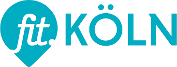

Willkommen auf der Website des TuS Köln-Merkenich 2009 e.V.!
Corona SV in der geänderten Fassung, 13.1.2022
Liebe Sportbegeisterte,
es wird ein bisschen einfacher, in der Halle Sport zu machen. Hoffen wir, dass es so
bleibt.
Für den Sportbetrieb in der Halle mit den Erwachsenen und den Kinder sind die
Einschränkungen geändert worden. Die wichtigsten Punkte sind:
Nur nach der 2G+-Regel dürfen Personen am Sport- und Fitnessangebot teilnehmen
(das heißt, nur geimpfte oder genesene Teilnehmer, die zusätzlich einen max. 24 Stunden
zurückliegenden bescheinigten negativen Antigentest vorweisen können oder über einen max.
48 Stunden zurückliegenden PCR-Test verfügen).
Geboosterte Personen sind von der Testpflicht ausgenommen.
Schüler*innen bis 18 Jahre dürfen auch weiterhin nach der 3G-Regel
Sport betreiben. In der Ferienzeit gilt der Schülerausweis nicht, es muss auch ein
negativer Antigentest einer zertifizierten Stelle vorgelegt werden. Kinder unter 15 Jahren
sind immunisierten Personen gleichgestellt.
An Orten, an denen ein Test für den Zutritt notwendig ist, berechtigt auch ein vom
Übungsleiter beaufsichtigter Selbsttest zu Zutritt.
Bei den Eltern-Kind-Kursen werden wir die Teilnahme an den Kursen weiter
beschränken. Den Aufnahmestopp und den Wegfall des Probetrainings werden wir verlängern.
Bei Anmeldungen werden wir eine Warteliste führen und die neuen Mitglieder informieren,
wenn eine Aufnahme möglich ist.
Bis dahin, viel Spaß und Vergnügen bei unserem Vereinssport. Bleibt alle gesund
und eurem Verein treu.
Der Vorstand.
Endlich wieder Sport! Yoga-Kurs beim TuS, 17.08.2021
Liebe Vereinsmitglieder,
die aktuelle Lage zur Pandemie gibt uns Hoffnung das wir nach den Ferien unsern
Sportbetrieb wieder ohne große Einschränkungen aufnehmen können. Daher möchten wir unsere
Ankündigung umsetzen und unseren Erwachsenen Mitglieder die im Jahr 2020 Ihren Beitrag
gezahlt haben einen Yoga-Kurs anbieten. Der Kurs beginnt am Donnerstag den
02.09.2021 von 18:30 bis 20:00 Uhr
und findet in der Merkenicher Sporthalle statt. Er endet am
16.12.2021 und findet in den Ferien nicht statt. Der Kurs ist für Anfänger und Teilnehmer
mit Grundkenntnissen geeignet.
Um den Kurs planen zu können möchten wir euch bitten sich
bei unserer Spartenleiterin für Gymnastik Anita Lenarz zu melden. Tel.
0221-705774 .
Der Kurs steht auch Nichtmitgliedern offen.
Die Anmeldegebühr beträgt 60,- Euro für
Auszubildende, Studenten und Schüler mit einem Nachweis, 60,- Euro für
Lebenspartner von Mitgliedern und 100,- Euro für Nichtmitglieder. Der
Anmeldeschluss ist der 26.08.2021.
Allen sportbegeisterten wünschen wir alles gute für
den Rest des Jahres.
Ihr Vereinsvorstand
Kölle aktiv, 02.07.2021
Der Stadtsportbund Köln bietet in diesem Jahr vom 01.07. bis zum 31.09.2021 wieder
ein für alle Kölner kostenloses Programm an.
Die Internetseite ist sehr übersichtlich aufgebaut und bietet viele tolle Angebote.
Sortiert nach Bezirken (Chorweiler,Ehrenfeld,Nippes,Lindenthal usw)
Kursheft nach Wochentagen
alle Aktivitäten im Freien
keine Vereinszugehöhrigkeit nötig
keine Anmeldung nötig
Standortbeschreibung mit Google Maps hinterlegt.
Also Angebot aussuchen, hingehen, mitmachen und Spass haben.
Wir freuen uns, wenn es nach den Ferien bei uns wieder richtig losgeht.
SPORT@Home
Für alle die auch in den aktuellen Zeiten aktiv mit anderen bleiben möchten,
bietet die Initiative von fit.Koeln momentan ein tollen gratis Angebot für jederman.
Insbesondere wollen wir auf die SPORT@HOME Angebote hinweisen. Weiter
Informationen findet ihr unter fit.koeln.
